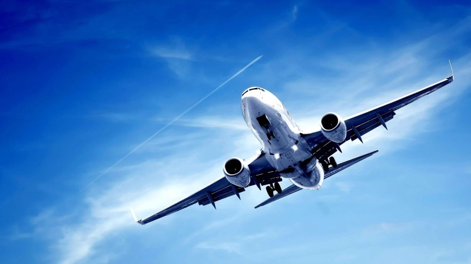

<!--
  Generated template for the SingleFlightPage page.

  See http://ionicframework.com/docs/components/#navigation for more info on
  Ionic pages and navigation.
-->
<ion-header>

  <ion-navbar>
    <ion-title>{{logo}}</ion-title>
  </ion-navbar>

</ion-header>


<ion-content padding>
  <ion-card>

    
    <ion-fab right top>
      <button ion-fab>
        <ion-icon name="plane"></ion-icon>
      </button>
    </ion-fab>
    <ion-item>
      <ion-icon name="arrow-dropup-circle" item-start large></ion-icon>
      <h2 *ngIf='!origin'>Private flight</h2>
      <h2 *ngIf='origin'>{{origin}}</h2>
      <p>{{model}}</p>
    </ion-item>

    <ion-item>
      <ion-icon name="arrow-dropdown-circle" item-start large ></ion-icon>
      <h2 *ngIf='!destination'>Private flight</h2>
      <h2 *ngIf='destination'>{{destination}}</h2>
      <p>{{model}}</p>
    </ion-item>

    <ion-item>
      <span item-start>{{altitude}}</span>
      <span item-start>(meters)</span>
      <button ion-button icon-start clear item-end>
        <ion-icon name="navigate"></ion-icon>
        Altitude
      </button>
    </ion-item>
  </ion-card>
</ion-content>
<ion-footer>
  <ion-toolbar>
    <p text-center>Copyright: Matija Misic</p>
  </ion-toolbar>
</ion-footer>
